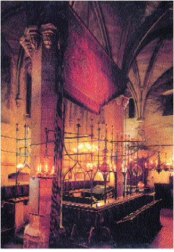

Altneushul, Prague.
(Pagination follows the Birnbaum machzor)
Reader. ADMIT-TO-G-d L-RD, WE NEED PRAISE-G-d
Congregation and Reader. WE WILL PRAISE-G-d L-RD FROM-NOW-ON FOREVER.
L-RD OUR G-D, KING WORLD~GENERAL, WE PRAISE-G-d YOU-G-d. WHY? YOU-G-d COMMAND, NIGHT DARK'gradual'. HEAVEN GATE-OPEN@heaven , WISE YOU-G-d. LONG-AGO YOU-G-d SET-UP SPRING, NEXT-rt , SUMMER, NEXT-rt , FALL, NEXT-rt , WINTER, EXACT* RIGHT*. STAR (2h)5:-CL'dotting the sky', YOU-G-d (2h)5:-CL'slowly revolve'. (<) NIGHT, (>) DAY, YOU-G-d SEPARATE. (<) DARK'gradually', DAY LEAVE-TO-[rt]. (>) SUNRISE, NIGHT FADE-AWAY. (2h)alt.INDEX FOLLOW YOUR-G-d's LAW. WHY? YOU-G-d MAKE (2h)alt.INDEX. WE HOPE HE-G-d THINK~LIKE KING WILL SUPERVISE FOREVER. L-RD, WE PRAISE-G-d YOU-G-d. WHY? YOU-G-d CAUSE NIGHT DARK'gradually'.
JEWISH PEOPLE, YOU-G-d CHERISH* UP-TO-NOW?. CLEAR HOW? (<) G-d-TEACH-us US TORAH, (>) COMMAND INDEX-LIST. INSPIREwg. (2h)alt.INDEX, WE (2h)THINK-ABOUT ALL-DAY, ALL-NIGHT. WHY? WE REALLY-WANT YOU-G-d CHERISH US CONTINUE"overtime' L-RD, WE PRAISE-G-d YOU-G-d. WHY? YOU-G-d CHERISH JEWISH PEOPLE.
JEWISH PEOPLE, PAY-ATTENTION-me , KNOW-THAT L-RD HIMSELF-G-d OUR G-D. L-RD, ONLY-ONE. (CONTINUE PRAY SPEAK-TO-SELF). . .
L-RD YOUR-arc G-D, REAL. (CONTINUE PRAY SPEAK-TO-SELF). . .
LONG-AGO G-d CONTROL"each" JEWISH PEOPLE, INDEX-ctr, arc ACCEPT. INDEX-ctr, arc SING TOGETHER MOSES. QUOTE, L-RD WHO HAVE AUTHORITY LIKE YOU-G-d. YOU-G-d HOLY* G-d-SHINE. PEOPLE SCADS-OF PRAISE++-G-d YOU-G-d. YOUR-G-d WORK WONDERFUL*. WHO LIKE YOU-G-d? HAVE-NONE. LONG-AGO JEWISH PEOPLE INDEX-lf, arc CONFRONT RED SEA, YOU-G-d SEPARATE++-away . YOUR-G-d's POWER, CLEAR. THEY-lf, arc SHOCKED, HE-G-d, OUR G-D. ALLOW L-RD CONTINUE CONTROL THINK~LIKE KING FOREVER. (end role play) TORAH, TELL-STORY. (2h)alt.LONG-AGO J-A-C-O-B, SELF-ctr SLAVE. BUT L-RD PAY-TO-lf OPPRESSOR@lf , HE-ctr SAVED. L-RD, BLESS. HOW? HE-G-d WILLING PAY-TO-[lf], JEWISH PEOPLE SAVED.
L-RD OUR G-D, ALLOW US GO-TO-BED, PEACE. OUR KING, ALLOW US GET-UP, PROCEED ENJOY. ALLOW PEACE SPREAD, PROTECT THINK~LIKE TENT'over head'. G-d-COUNSEL-TO-us US DO RIGHT*. WAR, SICK, DEATH, HUNGER, SORROW, PROTECT US. SAVED FOR YOUR-G-d's S-A-K-E. FEEL TEMPTED, L-RD G-d-HELP-us US RESIST. WE TRUST YOU-G-d. WHY? WE KNOW-THAT G-D THINK~LIKE KING G-d-SELF GRACIOUS, G-d-HAVE-MERCY-ON-us . EVERYTHING WE DO, PLEASE TAKE-CAR-OF-us FROM-NOW-ON FOREVER. L-RD, YOU-G-d BLESS. HOW? YOUR-G-d's PEACE SPREAD, PROTECT THINK~LIKE TENT'over head' FOR US, FOR JEWISH PEOPLE GENERAL, FOR JERUSALEM.
On Shabat
G-D COMMAND JEWISH PEOPLE CELEBRATE SABBATH CONTINUALLY. AGREE~BETWEEN-G-d-AND-us , PASS-DOWN-TO CHILDREN FROM-THEN-ON FOREVER. G-D SAY 8 SABBATH SHOW"all"@rt JEWISH PEOPLE lf -CONNECT-TO-me STRONG*. (CHORUS) LONG-AGO G-D SET-UP@heaven HEAVEN, SET-UP@lf EARTH, SIX-DAY CONTINUE (2h)alt.INVENT MAKE++. (CHORUS) BUT SEVENTH DAY ARRIVE, G-DSTOP, REST; PUSH-ASIDE-TO-lf , REST; GET-OFF-MIND, REST. (CHORUS)
On Festivals
L-RD POSS-G-d's HOLY DAY INDEX-LIST, MOSES ANNOUNCE JEWISH PEOPLE.
Mourners' Kaddish
G-D HIS-G-d's NAME~SHINY, HOLY*. PRAISE-G-d G-D. WE MUST ANNOUNCE HIS-G-d's WORTH. SPREAD WORLD~THEREABOUTS HE-G-d HIMSELF-G-d MAKE. HOPE DURING YOUR LIFE TIME-PERIOD EVERYONE ACCEPT AUTHORITY HIS+-G-d's , #ALL-OF-YOU SAY, AMEN.
Congregation and Mourner. HOPE HE-G-d CONTINUE BLESS US FROM-NOW-ON, FOREVER.
Mourners. WE ANNOUNCE HE-G-d BLESS US. HIS NAME~SHINY, ADVANCED; WE PRAISE-G-d. WE HONOR-G-d. WE ADMIT HIS-G-d's NAME HOLY. PRAISE-G-d G-D. WE REALIZE (1)ANNOUNCE, (2)HONOR, (3)PRAISE, INDEX-LIST-OF-3 LOW NOT ENOUGH. YOU-G-d MUCH-MORE. #ALL-OF-YOU SAY AMEN.
PRAY HEAVEN Heaven -SEND-TO-ctr , (<) PEACE, (>) LIFE, FOR US, PLUS JEWISH PEOPLE IN-GENERAL. #ALL-OF-YOU SAY AMEN.
G-D ESTABLISH PEACE FAR-OFF HEAVEN. WE PRAY HERE BECOME here -SAME-AS-heaven FOR US PLUS JEWISH PEOPLE GENERAL. #ALL-OF-YOU SAY, AMEN.
G-D ESTABLISH PEACE FAR-OFF HEAVEN. WE PRAY HERE BECOME here -SAME-AS-heaven FOR US PLUS JEWISH PEOPLE GENERAL. #ALL-OF-US SAY AMEN. |: WE PRAY HERE BECOME here -SAME-AS-heaven FOR US PLUS JEWISH PEOPLE GENERAL. :|
11
Kiddush
LONG-AGO G-D SET-UP-Heaven HEAVEN, SET-UP EARTH. SIX-DAY, HE-G-d WORK++'sta', BUT SEVENTH DAY ARRIVE, WORK PUT-ASIDE, REST. G-D DECIDE SABBATH SPECIAL, DO-UP HOLY. WHY? PEOPLE WORK++'sta' SIX-DAY ENOUGH++, SEVENTH DAY REST++ MUST.
L-RD, OUR G-D, KING WORLD~GENERAL, WE PRAISE-G-d YOU-G-d. WHY? INVENT~MAKE GRAPES.
L-RD, OUR G-D, KING WORLD~GENERAL, WE PRAISE-G-d YOU-G-d. WHY? PEOPLE GROUP++->, YOU-G-d PICK-lf JEWISH GROUP@lf HELP-lf BECOME HOLY@lf . WHY? YOU-G-d CHERISH INDEX-circle@lf . SABBATH HOLY, G-d-GIFT-TO-lf , PASS-DOWN. FOR-FOR, LOOK-BACK REMEMBER SIX-DAY G-d(<) HEAVEN, (>) EARTH MAKE++. SABBATH ctr -SELF HOLIDAY TOP-PRIORITY. REMIND-us LONG-AGO JEWISH SLAVE EGYPT, LEAVE. PEOPLE GROUP++->, YOU-G-d PICK-lf JEWISH GROUP@lf HELP-lf BECOME HOLY@lf . WHY? YOU-G-d CHERISH INDEX-circle@lf . SABBATH HOLY, G-d-GIFT-TO-lf , PASS-DOWN. L-RD, WE PRAISE-G-d YOU-G-d. WHY? SABBATH, SEPARATE-TO-lf , MAKE@lf HOLY@lf .
From the second night of Pesach until the night before Shavuot, the Omer is counted.
OUR RESPONSIBILITY "WHAT", PRAISE-G-d L-RD G-d-SELF CONTROL (2h)#ALL. ANNOUNCE HE-G-d ADVANCED*, (<) HEAVEN SET-UP@Heaven , (>) EARTH SET-UP. OTHER PEOPLE INDEX-rt, arc WORSHIP "WHAT", (<) WOOD WHITTLE SHAPE, (>) STONE CHISEL SHAPE.
WE BEND-KNEES-TO-G-d~PROSTRATE-TO-G-d. WHY? HE-G-d KING TOP, HOLY*. APPROPRIATE PRAISE-G-d.
[Most congregations say this silently:] HEAVEN, HE-G-d SET-UP THINK~SIMILAR TENT'stretch over head'. EARTH, HE-G-d SUPPORT-FOUNDATION. STAR (2h)5:-CL'stars in the sky' stars -SHOW-TO-us HIS-G-d's NAME~SHINY. MOUNTAIN'massive' LOOK-AT"over time", HIS-G-d's POWER CLEAR. G-d-SELF, OUR G-d ONLY. G-d-SELF, OUR KING. RULER INDEX"each" COMPARE-other -WITH-G-d, NOTHING-TO-IT INDEX-lf, arc . TORAH, TELL-STORY QUOTE, NOW+ KNOW-THAT L-RD G-d-SELF TRUE G-D. HE-G-d CONTROL@Heaven HEAVEN. HE-G-d CONTROL EARTH. HIS-G-d's AUTHORITY SUPREME. (CONTINUE PRAY SPEAK-TO-SELF). . .
G-D~BOOK FORSEE QUOTE L-RD WILL BECOME KING. MEAN, HE-G-d CONTROL EARTH~THEREABOUTS COMPLETE*. SAME~TIME HAPPEN, L-RD BECOME ONLY-ONE. PLUS HIS-G-d's NAME (X3) BECOME ONLY-ONE.
From the beginning of Elul until Hoshana Rabba, add Psalm 27.
WE (<) PRAISE-G-D, (>) WORSHIP-G-d, G-D TRUE~WORK.
G-d-HIMSELF LIVE, BUT CHANGE NEVER.
HE ONLY-ONE, NONE EQUAL-G-d.
(<) MULTIPLE-COMPLEX, (>) STILL ONLY-ONE. HOW? BIG-QUESTION.
G-D IDEA~LIKE SPIRIT. BODY, HAVE-NONE.
TOP* HOLY HE. EVERYTHING@lf COMPARE-TO-G-d WORTHLESS@lf.
LONG-AGOwg G-D SET-UP WORLD.
WHO CAUSE G-D WHO? NONE.
WORLD~GENERAL, L-RD CONTROL.
HIS POWER CLEAR*
FROM-TIME-TO-TIME G-D (2h)alt.PICK PEOPLE PROPHESY.
HE CHERISH EACH.
UP-TO-NOW PROPHET VARIOUS HAVE.
TOP-PRIORITY WHO? MOSES, M-O-S-E-S INDEX-lf.
PROOF, G-D G-d-TEACH-lf HIS-G-d's LAW.
HE TRUST-lf ANNOUNCE JEWISH PEOPLE RIGHT*.
TORAH TRUTH DEFINITE.
G-D (<) CHANGE, (>) REPLACE, NEVER.
WE THINK-TO-SELF SECRET, BUT G-D KNOW OUR INSIDE-SELF.
HE PREDICT FAR-FUTURE"lalala" CAN
(<) PERSON SELF-INDEX@lf KIND-HEARTED lf-HELP"each", G-D (2h)alt.GIFT-TO-lf BENEFIT.
(>) PERSON MALIICIOUS WORSE+, G-D PUNISH WORSE+.
UP-TO-NOW PEOPLE VARIOUS ENSLAVED.
TIME RIGHT* HE G-d-SEND MESSIAH. HIT* WORLD SAFE.
PLUS PEOPLE (2h)alt.DIE, SOME G-D CHERISH.
HE CAUSE EACH WAKE-UP, (2h)alt.GET-UP.
Havdalah
KNOW-THAT G-D G-d -SELF SAVE ME. TRUST-G-d MEAN ANXIETY, DISSOLVE. WHY? LONG-AGO UP-TO-NOW L-RD G-d -SUPPORT. HE-G-d BLESS LONG-LIST'pc'. G-D PROTECT J-A-C-O-B INDEX-lf US, Jacob -SAME-AS-us . (2h)LONG-AGO PURIM, JEWISH PEOPLE INDEX-lf, arc lf -BEAT-rt GROUP@rt TRY rt -OPPRESS-lf THEY-lf CELEBRATE. HOPE G-D WILLING DO FOR US ALSO. WINE CUP (5:^)-CL'raise cup' DURING SUMMON-G-d L-RD.
L-RD OUR G-D, KING WORLD~GENERAL, WE PRAISE-G-d YOU-G-d . WHY? INVENT~MAKE GRAPES.
L-RD OUR G-D, KING WORLD~GENERAL, WE PRAISE-G-d YOU-G-d . WHY? INVENT~MAKE THINGS (2h)alt.SMELL'deeply' FINEwg.
L-RD OUR G-D, KING WORLD~GENERAL, WE PRAISE-G-d YOU-G-d . WHY? INVENT~MAKE FIRE. LIGHT, SPREAD.
L-RD OUR G-D, KING WORLD~GENERAL, WE PRAISE-G-d YOU-G-d . WHY? (<) HOLY, (>) EVERYDAY; (<) LIGHT (>) DARK; (<) JEWISH PEOPLE (>) OTHER PEOPLE (>); (<) SEVENTH DAY (>) SIX-DAY WORK'sta'++. G-D SEPARATE. L-RD, WE PRAISE-G-d YOU-G-d . WHY? (<) HOLY, (>) REGULAR, SEPARATE.
A. From http://www.jewish-holiday.com/awesome.html (Awesome), which is no longer extant.